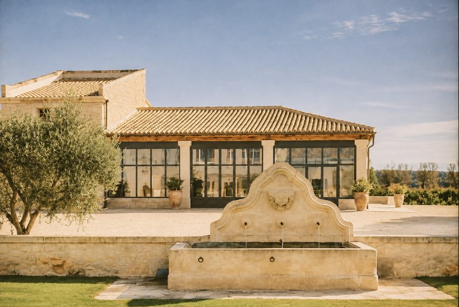
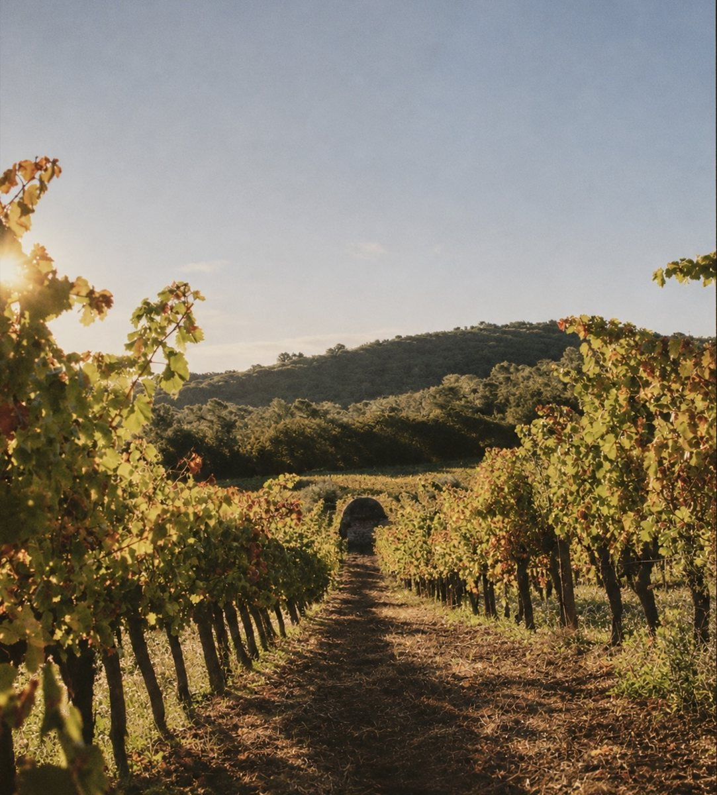

La Mairie

Rendez-vous à 15h30 à la Mairie de Saint-Mandé.
La cérémonie civile sera suivie d'une soirée au sein de la salle des fêtes de la mairie.

La Welcome party
Autour du lac du Mas de Rey pour lancer les festivités.

La Houppa

La cérémonie sous la houppa, suivie du dîner et de la soirée au Mas de Rey.